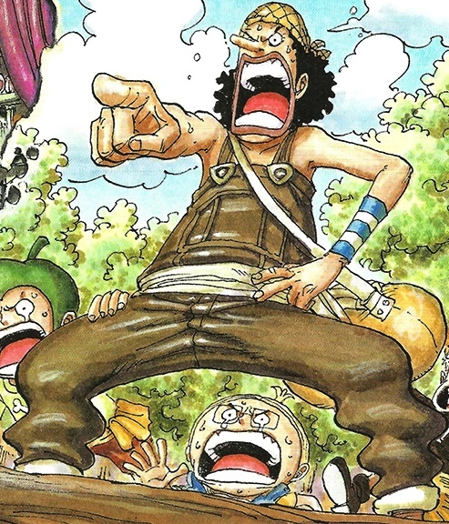

É o atirador e estrategista dos Piratas do Chapéu de Palha, conhecido por sua habilidade com estilingues e sua criatividade em combate. Ele traz humor e engenhosidade para a tripulação, além de desempenhar um papel crucial em muitas missões.
Usopp simboliza a importância da coragem e da autoaceitação. Sua evolução de um mentiroso inseguro para um guerreiro valente inspira muitos fãs a enfrentar seus próprios medos e acreditar em seu potencial. Além disso, seu senso de humor e otimismo adicionam uma dinâmica única à tripulação, reforçando a importância de manter um espírito positivo mesmo em tempos difíceis.
Usopp nasceu na Vila Syrup, no East Blue, onde era conhecido como "Usopp, o Mentiroso". Sua infância foi marcada por histórias inventadas e pelo medo de enfrentar desafios reais. Ao se juntar à tripulação de Luffy, Usopp busca superar sua timidez e provar seu valor como guerreiro e amigo. Ele é corajoso, embora muitas vezes hesitante, e possui um coração generoso, disposto a arriscar tudo pelos seus companheiros.
Usopp é um mestre atirador, utilizando seu estilingue de forma precisa e eficiente em batalha. Ele também é um inventor talentoso, criando diversas armas e gadgets que auxiliam a tripulação em suas aventuras. Sua habilidade em criar armadilhas e estratégias engenhosas o torna um valioso estrategista. Além disso, Usopp desenvolve suas habilidades de combate ao longo da série, tornando-se mais confiante e eficiente em confrontos diretos.